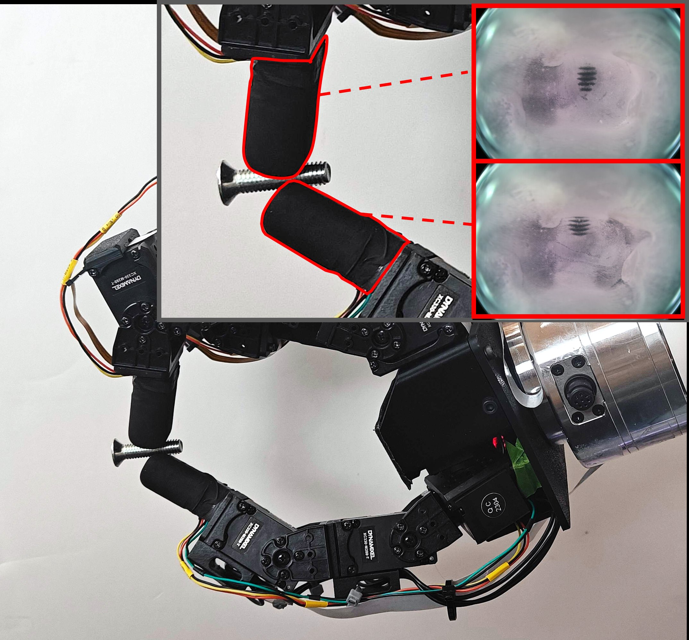
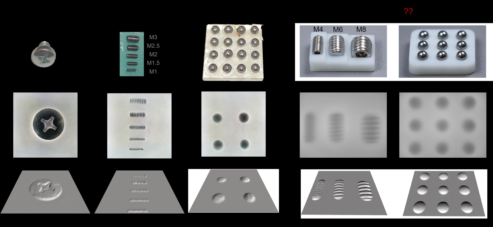
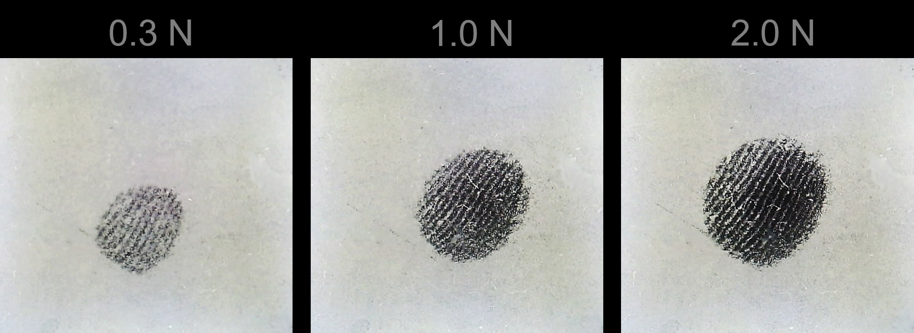
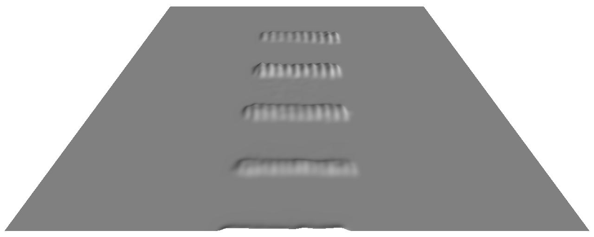

VIEW A / DEVICE SCALE
SCHEMATIC
LIVE / OPTICAL COUPLING Compact tactile vision
Contact,
made visible.
GlowTact turns pressure-induced optical coupling into a direct, high-contrast tactile image using a microtextured clear gel, a black membrane, and single-color illumination.
- INTERFACE
- P2500-molded silicone
- SIGNAL
- Local darkening
- FORM
- Compact fingertips

One sensing principle across robotic contact, tactile imaging, and compact fingertip hardware.
SIGNAL CHAMBER ONLINE
QUALITATIVE MECHANISM VIEW
SCROLL TO INSPECT
SYS / 01 Coupling mechanism
How contact
becomes signal.
One pressure control drives the deformation, the air-gap closure, and the camera response.
VIEW B / MICRO SCALE
Asperity coupling
SECTION / HEIGHT EXAGGERATED
Fixed seed 2500-A
A fixed oblique projection shows contact islands expanding across the P2500-inspired surface.
HEIGHT FIELD / DIMENSIONLESS
Coupled area
VIEW C / SENSOR OUTPUT / DEVICE FOV
SIMULATED
Camera response
SEQUENCE
- 00 Air gap
- 01 Local coupling
- 02 Expanded coupling
STATE 00
An air gap still separates membrane and gel; the camera sees no contact signal.
Qualitative model of the reported P2500 texture and coupling mechanism. Conceptual visualization. Geometry and optical paths are schematic and are not a calibrated mechanical or ray-tracing simulation.
REC / 01 Experimental context
A compact signal
at the fingertip.
Supplied project media places the sensor in robotic manipulation. The adjacent capabilities summarize what the paper evaluates.
Visible under light loading.
Small local interface changes produce spatially concentrated tactile responses.
Structure survives the signal.
Contact images preserve fine patterns, including fingerprint ridges and M1 threads.
Darkness changes continuously.
Pressure-responsive images support continuous normal-force estimation.
CFG / 01 Sensor forms
One principle.
Three bodies.
Flat
4 mm XP-565 gel, P2500 mold texture, perimeter illumination.
Omnidirectional
Textured silicone over a clear epoxy skeleton with an LED ring.
Humanoid
Approximately 17 mm wide with front-facing tactile coverage.
DAT / 01 Spatial evidence
The dark signal
keeps its shape.
Experimental contact images and qualitative reconstructions show spatial structure across pressure, fine threads, and multiple objects.



DOC / 01 Research record
GlowTact
Simple and Compact Vision-Based Tactile Sensing with High Sensitivity and Spatial Resolution